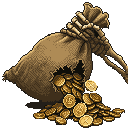
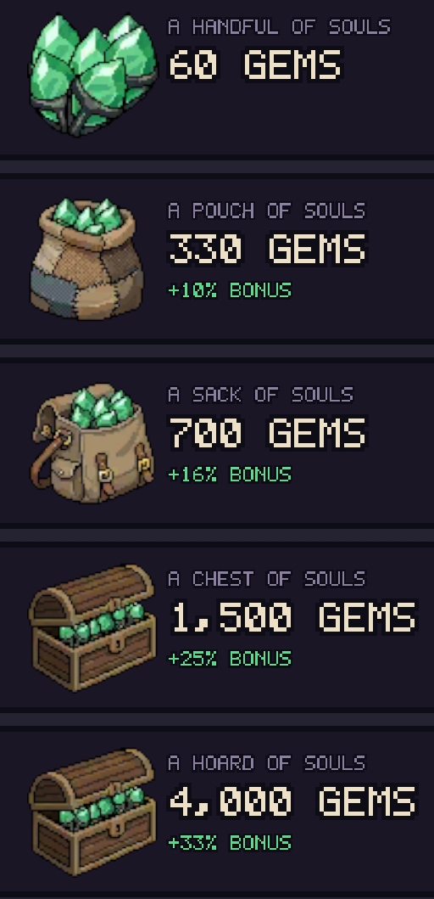
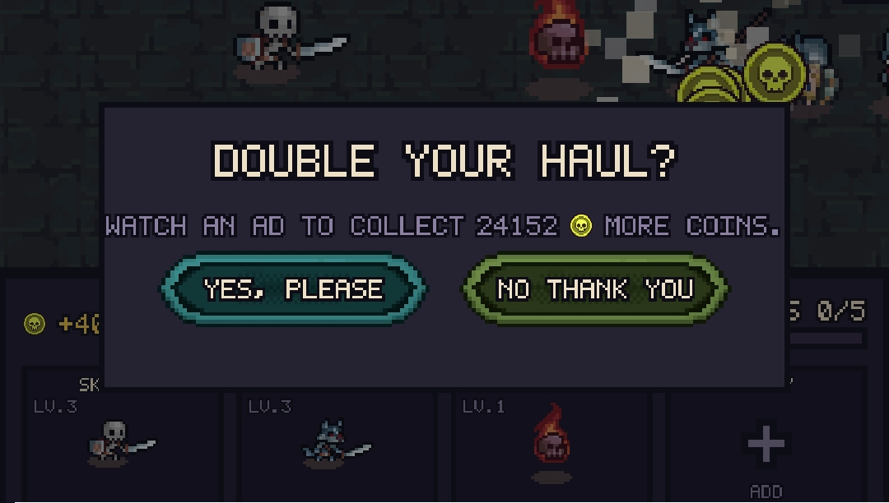
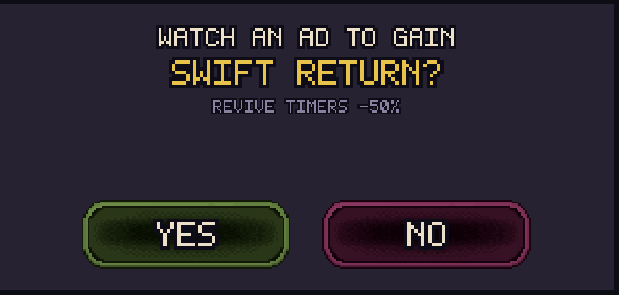
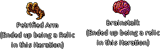

<!DOCTYPE html>
<html lang="en">
<head>
  <meta charset="UTF-8" />
  <meta name="viewport" content="width=device-width, initial-scale=1.0" />
  <title>Rest in Profit | Dekel Riess</title>
  <meta name="description" content="Rest in Profit, a cozy mobile necromancer game: Disco Zoo-style digging plus a role-based dungeon defense. Design breakdown." />
  <link rel="icon" type="image/png" href="../favicon.png" />
  <meta property="og:type" content="website" />
  <meta property="og:title" content="Rest in Profit | Dekel Riess" />
  <meta property="og:description" content="Rest in Profit, a cozy mobile necromancer game: Disco Zoo-style digging plus a role-based dungeon defense. Design breakdown." />
  <meta property="og:url" content="https://dekeloni2.github.io/portfolio-website/games/rest-in-profit.html" />
  <meta property="og:image" content="https://dekeloni2.github.io/portfolio-website/dekel.png" />
  <meta name="twitter:card" content="summary" />
  <link rel="preconnect" href="https://fonts.googleapis.com">
  <link rel="preconnect" href="https://fonts.gstatic.com" crossorigin>
  <link href="https://fonts.googleapis.com/css2?family=Playfair+Display:ital,wght@0,700;0,800;1,700;1,800&family=Inter:wght@400;500;600;700&display=swap" rel="stylesheet">
  <style>
    /* ─── Reset & Base ───────────────────────────────────────────── */
    *, *::before, *::after { box-sizing: border-box; margin: 0; padding: 0; }

    :root {
      --bg:       #07070f;
      --surface:  #0d0d1a;
      --surface2: #131320;
      --border:   #21213a;
      --accent:   #9333ea;
      --accent2:  #c084fc;
      --glow:     rgba(147,51,234,0.25);
      --text:     #ededf5;
      --muted:    #7878a0;
      --radius:   8px;
      --max-w:    1100px;
    }

    html { scroll-behavior: smooth; }

    body {
      background: var(--bg);
      color: var(--text);
      font-family: 'Inter', 'Segoe UI', system-ui, -apple-system, sans-serif;
      font-size: 16px;
      line-height: 1.65;
    }

    /* Subtle film grain overlay */
    body::before {
      content: '';
      position: fixed;
      inset: 0;
      background-image: url("data:image/svg+xml,%3Csvg xmlns='http://www.w3.org/2000/svg' width='300' height='300'%3E%3Cfilter id='n'%3E%3CfeTurbulence type='fractalNoise' baseFrequency='0.75' numOctaves='4' stitchTiles='stitch'/%3E%3C/filter%3E%3Crect width='300' height='300' filter='url(%23n)' opacity='1'/%3E%3C/svg%3E");
      opacity: 0.028;
      pointer-events: none;
      z-index: 9999;
    }

    a { color: var(--accent2); text-decoration: none; }
    a:hover { text-decoration: underline; }

    /* ─── Layout ─────────────────────────────────────────────────── */
    .container { max-width: var(--max-w); margin: 0 auto; padding: 0 24px; }

    section { padding: 96px 0; }
    section + section { border-top: 1px solid transparent; background-image: linear-gradient(var(--bg), var(--bg)), linear-gradient(90deg, transparent, rgba(147,51,234,0.2) 30%, rgba(147,51,234,0.2) 70%, transparent); background-origin: border-box; background-clip: padding-box, border-box; border-top: 1px solid transparent; position: relative; }
    section + section::before { content: ''; position: absolute; top: 0; left: 0; right: 0; height: 1px; background: linear-gradient(90deg, transparent, rgba(147,51,234,0.25) 30%, rgba(147,51,234,0.25) 70%, transparent); }

    h1 { font-size: clamp(2rem, 5vw, 3.2rem); font-weight: 700; line-height: 1.15; }
    h2 { font-family: 'Playfair Display', Georgia, serif; font-size: clamp(1.4rem, 3vw, 2rem); font-weight: 700; margin-bottom: 12px; }
    h3 { font-size: 1.05rem; font-weight: 600; margin-bottom: 6px; }

    .label {
      font-size: 0.72rem;
      font-weight: 700;
      letter-spacing: 0.12em;
      text-transform: uppercase;
      color: var(--accent2);
      margin-bottom: 10px;
      display: block;
    }

    .section-header { margin-bottom: 56px; }
    .section-header p { color: var(--muted); max-width: 580px; margin-top: 8px; }

    /* ─── Nav ────────────────────────────────────────────────────── */
    nav {
      position: fixed;
      top: 0; left: 0; right: 0;
      z-index: 100;
      background: rgba(7,7,15,0.85);
      backdrop-filter: blur(20px) saturate(1.4);
      border-bottom: 1px solid rgba(147,51,234,0.18);
      box-shadow: 0 1px 40px rgba(0,0,0,0.5);
    }

    .nav-inner {
      display: flex;
      align-items: center;
      justify-content: space-between;
      height: 60px;
      max-width: var(--max-w);
      margin: 0 auto;
      padding: 0 24px;
    }

    .nav-logo { font-weight: 700; font-size: 0.95rem; color: var(--text); }

    .nav-links { display: flex; gap: 28px; list-style: none; }
    .nav-links a { color: var(--muted); font-size: 0.85rem; transition: color 0.2s; }
    .nav-links a:hover { color: var(--text); text-decoration: none; }

    /* ─── Buttons ────────────────────────────────────────────────── */
    .btn {
      display: inline-flex;
      align-items: center;
      gap: 8px;
      padding: 11px 22px;
      border-radius: var(--radius);
      font-size: 0.88rem;
      font-weight: 600;
      cursor: pointer;
      transition: opacity 0.2s, transform 0.15s;
      border: none;
    }
    .btn:hover { opacity: 0.85; text-decoration: none; transform: translateY(-1px); }
    .btn-primary { background: linear-gradient(135deg, var(--accent), #7c3aed); color: #fff; box-shadow: 0 0 20px rgba(147,51,234,0.35); }
    .btn-primary:hover { box-shadow: 0 0 32px rgba(147,51,234,0.55); }
    .btn-ghost { background: transparent; color: var(--text); border: 1px solid var(--border); }
    .btn-ghost:hover { border-color: rgba(147,51,234,0.5); }
    .btn-secondary { background: transparent; color: var(--text); border: 1px solid var(--border); }
    .btn-secondary:hover { border-color: rgba(147,51,234,0.5); }

    /* ─── Badges ─────────────────────────────────────────────────── */
    .badge {
      display: inline-block;
      padding: 3px 10px;
      border-radius: 20px;
      font-size: 0.7rem;
      font-weight: 700;
      letter-spacing: 0.08em;
      text-transform: uppercase;
    }
    .badge-done { background: rgba(34,197,94,0.15);  color: #4ade80; }
    .badge-wip  { background: rgba(251,146,60,0.15); color: #fb923c; }
    .badge-plan { background: rgba(124,108,255,0.15); color: var(--accent2); }

    /* ─── Tags ───────────────────────────────────────────────────── */
    .tags { display: flex; flex-wrap: wrap; gap: 6px; margin-top: 14px; }
    .tag {
      background: var(--surface2);
      border: 1px solid var(--border);
      border-radius: 4px;
      padding: 2px 8px;
      font-size: 0.72rem;
      color: var(--muted);
    }

    /* ─── Cards ──────────────────────────────────────────────────── */
    .card {
      background: var(--surface);
      border: 1px solid var(--border);
      border-radius: 12px;
      padding: 24px;
      transition: border-color 0.2s, transform 0.2s;
    }
    .card:hover { border-color: rgba(147,51,234,0.6); transform: translateY(-2px); box-shadow: 0 0 24px rgba(147,51,234,0.12); }

    /* ─── Pillars ────────────────────────────────────────────────── */
    .pillars-grid {
      display: grid;
      grid-template-columns: 1fr 1fr;
      gap: 14px;
    }

    .pillar {
      background: var(--surface);
      border: 1px solid var(--border);
      border-radius: 10px;
      padding: 18px;
    }
    .pillar-num { font-size: 0.68rem; font-weight: 700; color: var(--accent2); letter-spacing: 0.08em; margin-bottom: 4px; }
    .pillar h4  { font-size: 0.88rem; font-weight: 700; margin-bottom: 5px; }
    .pillar p   { font-size: 0.8rem; color: var(--muted); line-height: 1.5; }

    /* ─── Mechanics grid ─────────────────────────────────────────── */
    .mechanics-grid {
      display: grid;
      grid-template-columns: repeat(auto-fill, minmax(250px, 1fr));
      gap: 14px;
    }
    .mechanic-card {
      background: var(--surface);
      border: 1px solid var(--border);
      border-radius: 10px;
      padding: 20px;
    }
    .mechanic-icon { font-size: 1.5rem; margin-bottom: 10px; display:flex; align-items:center; justify-content:center; width:32px; height:32px; }
    .mechanic-icon img { width: 32px; height: 32px; object-fit: none; image-rendering: pixelated; image-rendering: crisp-edges; }
    .mechanic-card h3 { font-size: 0.92rem; margin-bottom: 6px; }
    .mechanic-card p  { font-size: 0.8rem; color: var(--muted); line-height: 1.55; }

    /* ─── Progression row ────────────────────────────────────────── */
    .prog-row {
      display: grid;
      grid-template-columns: 1fr 1fr 1fr;
      gap: 16px;
    }
    .prog-block {
      background: var(--surface);
      border: 1px solid var(--border);
      border-radius: 10px;
      padding: 22px;
    }
    .prog-block h3 { margin-bottom: 10px; font-size: 0.95rem; }
    .prog-block ul { list-style: none; }
    .prog-block ul li {
      font-size: 0.8rem;
      color: var(--muted);
      padding: 4px 0;
      border-bottom: 1px solid var(--border);
      display: flex;
      align-items: center;
      gap: 8px;
    }
    .prog-block ul li:last-child { border-bottom: none; }
    .prog-block ul li::before { content: '→'; color: var(--accent); font-size: 0.7rem; flex-shrink: 0; }

    /* ─── Loop chain ─────────────────────────────────────────────── */
    .loop-chain { display: flex; flex-direction: column; gap: 0; margin: 20px 0; }
    .loop-step { display: flex; align-items: center; gap: 12px; padding: 8px 0; }
    .loop-dot {
      width: 30px; height: 30px;
      border-radius: 50%;
      background: var(--surface2);
      border: 2px solid var(--accent);
      display: flex; align-items: center; justify-content: center;
      font-size: 0.7rem; font-weight: 700; color: var(--accent2);
      flex-shrink: 0;
    }
    .loop-step-text { font-size: 0.88rem; font-weight: 600; }
    .loop-connector { width: 2px; height: 14px; background: var(--accent); opacity: 0.3; margin-left: 14px; }

    /* ─── Game section layout ────────────────────────────────────── */
    .game-section-layout {
      display: grid;
      grid-template-columns: 1fr 1.6fr;
      gap: 56px;
      align-items: start;
    }

    .game-meta-col .badge { margin-bottom: 14px; }
    .game-meta-col h2 { font-size: 1.6rem; margin-bottom: 10px; }
    .game-meta-col .concept { color: var(--muted); font-size: 0.9rem; margin-bottom: 20px; }

    .game-info-row {
      display: flex;
      flex-direction: column;
      gap: 6px;
      margin-top: 20px;
      padding-top: 20px;
      border-top: 1px solid var(--border);
    }
    /* ─── Hero CTAs ──────────────────────────────────────────────
       A .game-cta with an EMPTY href hides itself. Paste a URL in and
       the button appears — no other edit needed.                      */
    .game-cta {
      display: flex; align-items: center; justify-content: center; gap: 8px;
      margin-top: 10px; padding: 12px 22px;
      border-radius: 8px; font-size: 0.9rem; font-weight: 700;
      text-decoration: none; transition: opacity .2s, transform .15s, box-shadow .2s;
    }
    .game-cta:hover { text-decoration: none; transform: translateY(-1px); }
    .game-cta-primary {
      color: #fff;
      background: linear-gradient(135deg, var(--accent), #7c3aed);
      box-shadow: 0 0 20px rgba(147,51,234,0.35);
      margin-top: 20px;
    }
    .game-cta-primary:hover { box-shadow: 0 0 32px rgba(147,51,234,0.55); }
    .game-cta-ghost {
      color: var(--text); background: transparent; border: 1px solid var(--border);
    }
    .game-cta-ghost:hover { border-color: rgba(147,51,234,0.5); }
    .game-cta[href=""], .game-cta:not([href]) { display: none; }

    /* Status note: visible ONLY while both CTAs above are still empty.
       Fill either href and this hides itself automatically. */
    .cta-pending { display: none; }
    .game-cta[href=""] + .game-cta[href=""] + .cta-pending { display: block; }
    .cta-pending {
      margin-top: 20px; padding: 12px 16px;
      border: 1px dashed var(--border); border-radius: 8px;
      font-size: 0.8rem; line-height: 1.6; color: var(--muted);
      text-align: center;
    }
    .cta-pending strong { color: var(--accent2); font-weight: 700; display: block; margin-bottom: 3px; }

    .game-info-item { display: flex; gap: 10px; font-size: 0.8rem; }
    .game-info-key { color: var(--muted); min-width: 82px; }
    .game-info-val { color: var(--text); font-weight: 500; }

    /* section accent lines */
    .section-line {
      font-size: 0.72rem;
      font-weight: 700;
      letter-spacing: 0.1em;
      text-transform: uppercase;
      color: var(--muted);
      border-bottom: 1px solid var(--border);
      padding-bottom: 8px;
      margin-bottom: 20px;
      margin-top: 40px;
    }
    .section-line:first-child { margin-top: 0; }

    /* ─── Roles ──────────────────────────────────────────────────── */
    .roles-grid { display: flex; gap: 10px; flex-wrap: wrap; }
    .role-pill {
      background: var(--surface2);
      border: 1px solid var(--border);
      border-radius: 8px;
      padding: 12px 16px;
      flex: 1;
      min-width: 160px;
    }
    .role-name { font-weight: 700; font-size: 0.88rem; margin-bottom: 3px; }
    .role-desc { font-size: 0.76rem; color: var(--muted); line-height: 1.5; }
    .role-tank .role-name { color: #60a5fa; }
    .role-dps  .role-name { color: #f87171; }
    .role-sup  .role-name { color: #4ade80; }

    /* ─── Status effect pills ────────────────────────────────────── */
    .effects-wrap { display: flex; flex-wrap: wrap; gap: 8px; margin-top: 12px; }
    .effect-pill {
      background: var(--surface2);
      border: 1px solid var(--border);
      border-radius: 6px;
      padding: 6px 12px;
      font-size: 0.78rem;
      color: var(--muted);
    }
    .effect-pill strong { color: var(--accent2); }

    .active-moments-grid {
      display: grid;
      grid-template-columns: 1fr 1fr;
      gap: 16px;
      margin-bottom: 16px;
    }

    /* ─── Relic cards ────────────────────────────────────────────── */
    .relic-grid {
      display: grid;
      grid-template-columns: repeat(auto-fill, minmax(260px, 1fr));
      gap: 14px;
    }
    .relic-card {
      background: var(--surface);
      border: 1px solid var(--border);
      border-radius: 10px;
      padding: 18px 20px;
      display: flex;
      flex-direction: column;
      gap: 8px;
    }
    .relic-card .rc-head { display: flex; align-items: center; justify-content: space-between; gap: 10px; }
    .relic-card h4 { font-size: 0.92rem; font-weight: 700; color: var(--text); margin: 0; }
    .relic-card p { font-size: 0.8rem; color: var(--muted); line-height: 1.55; margin: 0; }
    .rc-legendary { border-color: rgba(251,191,36,0.4); }
    .rc-legendary::before { }
    .rar { font-size: 0.62rem; font-weight: 700; letter-spacing: 0.08em; text-transform: uppercase; padding: 2px 8px; border-radius: 20px; }
    .rar-common { background: rgba(148,163,184,0.15); color: #cbd5e1; }
    .rar-rare   { background: rgba(59,130,246,0.15);  color: #60a5fa; }
    .rar-epic   { background: rgba(168,85,247,0.15);  color: #c084fc; }
    .rar-leg    { background: rgba(251,191,36,0.15);  color: #fbbf24; }

    /* ─── Hero entrance / reveal ─────────────────────────────────── */
    .reveal {
      opacity: 0;
      transform: translateY(28px);
      transition: opacity 0.55s ease, transform 0.55s ease;
    }
    .reveal.visible { opacity: 1; transform: translateY(0); }

    /* ─── Contact ────────────────────────────────────────────────── */
    #contact { text-align: center; padding: 80px 0; }
    #contact h2 { margin-bottom: 10px; }
    #contact p  { color: var(--muted); margin-bottom: 28px; }
    .contact-links { display: flex; gap: 14px; justify-content: center; flex-wrap: wrap; }

    footer {
      text-align: center;
      padding: 24px;
      font-size: 0.78rem;
      color: var(--muted);
      border-top: 1px solid var(--border);
    }

    /* ─── At a glance band ───────────────────────────────────────── */
    .at-glance {
      background: linear-gradient(135deg, rgba(147,51,234,0.09), rgba(192,132,252,0.03));
      border: 1px solid rgba(147,51,234,0.28);
      border-radius: 14px;
      padding: 24px 26px 22px;
      margin-bottom: 44px;
    }
    .at-glance .label { margin-bottom: 8px; }
    .at-glance-hook {
      font-size: 1.02rem;
      color: var(--text);
      line-height: 1.6;
      font-weight: 500;
      margin: 0 0 18px;
    }
    .at-glance-hook strong { color: var(--accent2); font-weight: 600; }
    .highlight-chips { display: flex; flex-wrap: wrap; gap: 8px; margin-bottom: 18px; }
    .highlight-chip {
      background: var(--surface2);
      border: 1px solid var(--border);
      border-radius: 999px;
      padding: 6px 14px;
      font-size: 0.78rem;
      color: var(--text);
      display: inline-flex;
      align-items: center;
      gap: 7px;
    }
    .highlight-chip::before {
      content: '';
      width: 6px; height: 6px;
      border-radius: 50%;
      background: var(--accent);
      flex-shrink: 0;
    }
    .jump-to-detail {
      display: inline-flex;
      align-items: center;
      gap: 8px;
      font-size: 0.82rem;
      font-weight: 600;
      color: var(--accent2);
    }
    .jump-to-detail:hover { text-decoration: none; opacity: 0.82; }
    .section-line { scroll-margin-top: 80px; }

    /* ─── Site footer nav ────────────────────────────────────────── */
    .site-nav-footer {
      border-top: 1px solid var(--border);
      background: var(--surface);
      padding: 44px 0;
    }
    .site-nav-footer-label {
      font-size: 0.68rem;
      font-weight: 700;
      letter-spacing: 0.12em;
      text-transform: uppercase;
      color: var(--muted);
      margin-bottom: 16px;
      display: block;
    }
    .site-nav-footer-grid {
      display: flex;
      flex-wrap: wrap;
      gap: 10px 28px;
    }
    .site-nav-footer-grid a { font-size: 0.86rem; font-weight: 600; color: var(--text); }
    .site-nav-footer-grid a:hover { color: var(--accent2); text-decoration: none; }
    .site-nav-footer-games { margin-top: 24px; padding-top: 24px; border-top: 1px solid var(--border); }

    /* ─── Page transitions ───────────────────────────────────────── */
    body { animation: pageFadeIn 0.45s ease; }
    @keyframes pageFadeIn { from { opacity: 0; } to { opacity: 1; } }
    body.fade-out { opacity: 0 !important; transition: opacity 0.22s ease; }

    /* ─── Responsive ─────────────────────────────────────────────── */
    @media (max-width: 820px) {
      .game-section-layout { grid-template-columns: 1fr; gap: 32px; }
      .pillars-grid        { grid-template-columns: 1fr; }
      .prog-row            { grid-template-columns: 1fr; }
      .active-moments-grid { grid-template-columns: 1fr; }
    }
    @media (max-width: 640px) {
      .nav-links { display: none; }
      section    { padding: 64px 0; }
    }
  
    /* ─── Plain text blocks ──────────────────────────────────────── */
    .body-text { font-size: 0.88rem; color: var(--muted); line-height: 1.7; max-width: 680px; margin-bottom: 18px; }
    .body-text strong { color: var(--text); }
    .note-card { background: var(--surface); border: 1px solid var(--border); border-radius: 10px; padding: 16px 20px; }
    .note-card h4 { margin: 0 0 6px; font-size: 0.92rem; color: var(--accent2); }
    .note-card p { font-size: 0.84rem; color: var(--muted); line-height: 1.65; margin: 0; }
    .note-card p + p { margin-top: 8px; }

    /* ─── Key decisions + before/after tags ──────────────────────── */
    .key-decisions { background: var(--surface); border: 1px solid var(--border); border-left: 3px solid var(--accent); border-radius: 10px; padding: 16px 20px; margin-bottom: 36px; }
    .key-decisions h3 { font-size: 0.95rem; margin: 0 0 10px; color: var(--text); }
    .key-decisions ol { margin: 0; padding-left: 20px; display: flex; flex-direction: column; gap: 7px; }
    .key-decisions li { font-size: 0.85rem; color: var(--muted); line-height: 1.55; }
    .key-decisions li strong { color: var(--text); }
    .key-decisions li a { color: var(--accent2); font-size: 0.8rem; white-space: nowrap; }
    .ba-tags { display: flex; gap: 8px; margin-bottom: 12px; flex-wrap: wrap; }
    .ba-tags span { font-size: 0.68rem; font-weight: 700; color: var(--muted); border: 1px solid var(--border); border-radius: 6px; padding: 3px 8px; }
    .ba-tags span.after { color: var(--accent2); border-color: var(--accent); }
    [id] { scroll-margin-top: 90px; }
</style>
</head>
<body>

<nav>
  <div class="nav-inner">
    <a href="../index.html" class="nav-logo" style="text-decoration:none;">Dekel Riess</a>
    <ul class="nav-links">
      <li><a href="../games.html">Games</a></li>
      <li><a href="../experience.html">Experience</a></li>
      <li><a href="../toolbox.html">Toolbox</a></li>
      <li><a href="../roadmap.html">Roadmap</a></li>
    </ul>
  </div>
</nav>

<section id="rest-in-profit">
  <div class="container">
    <div class="game-section-layout">

      <div class="game-meta-col">
        <span class="badge badge-wip">In Development</span>
        <div style="display:flex; align-items:center; gap:12px; margin-top:12px;">
          
          <h2 style="margin:0;">Rest in Profit</h2>
        </div>
        <p class="concept">
          A cozy, slightly macabre mobile game built on Disco Zoo's digging loop. You're a necromancer in training: you dig undead minions out of graveyards, put them in your dungeon, and they fight off looting "heroes" while earning you coins. Digging and defending share one economy.
        </p>
        <div class="game-info-row">
          <div class="game-info-item"><span class="game-info-key">Engine</span><span class="game-info-val">Unity, C#</span></div>
          <div class="game-info-item"><span class="game-info-key">Genre</span><span class="game-info-val">Collection, management, auto-battler</span></div>
          <div class="game-info-item"><span class="game-info-key">Platform</span><span class="game-info-val">Mobile (Android)</span></div>
          <div class="game-info-item"><span class="game-info-key">Team</span><span class="game-info-val">Solo: design, code and pixel art</span></div>
          <div class="game-info-item"><span class="game-info-key">Inspiration</span><span class="game-info-val">Disco Zoo (NimbleBit)</span></div>
          <div class="game-info-item"><span class="game-info-key">Status</span><span class="game-info-val">In development, full loop playable</span></div>
        </div>

        <!-- ═══════════════════════════════════════════════════════════════
             PLAY CTAs — dormant until you paste a link in.

             Each button below stays INVISIBLE while its href="" is empty.
             Paste a URL between the quotes and it appears. Nothing else
             to change.

             1. CLOSED TEST  — Play Console › Testing › Closed testing ›
                               your track › "Copy link" (the web opt-in URL,
                               looks like play.google.com/apps/testing/<pkg>).
                               Available as soon as the 12-tester test starts,
                               weeks before production access.
             2. GOOGLE PLAY  — the store listing, once production is approved.

             When the closed test goes live, also update Status above to:
               "In closed testing · full loop playable end-to-end"
             and on release:
               "Released on Google Play · in active development"
        ════════════════════════════════════════════════════════════════ -->
        <a class="game-cta game-cta-primary" href="" target="_blank" rel="noopener">▶ Join the closed test</a>
        <a class="game-cta game-cta-ghost" href="" target="_blank" rel="noopener">Get it on Google Play ↗</a>
        <div class="cta-pending">
          <strong>Coming to Google Play</strong>
          Closed testing opens first. The join link will go here when it does.
        </div>
      </div>

      <div class="game-content-col">
        <div class="key-decisions">
          <h3>Key decisions</h3>
          <ol>
            <li><strong>Built and tested the dig loop alone first,</strong> before letting combat depend on it. <a href="#problem">More ↓</a></li>
            <li><strong>Fixed a "balance" problem with positioning, not stats,</strong> and the same squad lasted ten waves longer. <a href="#playtest">More ↓</a></li>
            <li><strong>Simulated offline raids instead of paying time × rate,</strong> so it doesn't turn into an idle game. <a href="#playtest">More ↓</a></li>
            <li><strong>Answered three feature requests with a tutorial,</strong> because they all came from players not understanding the loop. <a href="#playtest">More ↓</a></li>
            <li><strong>Premium buys time, never power,</strong> and every ad is one the player chooses to watch. <a href="#monetization">More ↓</a></li>
          </ol>
        </div>

        <!-- Gameplay first: the game in motion before any text -->
        <div class="at-glance reveal">

          <div class="hero-clips">
            <figure class="gif-slot">
              <video src="../rip_dig_reveal.mp4" aria-label="Rest in Profit: digging up a monster" autoplay loop muted playsinline preload="metadata" onerror="this.closest('.gif-slot').classList.add('gif-missing')"></video>
              <div class="gif-placeholder"><span class="gif-placeholder-icon">◆</span><span>Drop <code>rip_dig_reveal.mp4</code> here</span></div>
              <figcaption>Dig: <span>uncover a monster's shape tile by tile</span></figcaption>
            </figure>
            <figure class="gif-slot">
              <video src="../rip_defense.mp4" aria-label="Rest in Profit: the undead army defending the dungeon" autoplay loop muted playsinline preload="metadata" onerror="this.closest('.gif-slot').classList.add('gif-missing')"></video>
              <div class="gif-placeholder"><span class="gif-placeholder-icon">◆</span><span>Drop <code>rip_defense.mp4</code> here</span></div>
              <figcaption>Defend: <span>your army holds the line and earns coins</span></figcaption>
            </figure>
          </div>
        </div>

        <div class="section-line" id="breakdown">What the design is built on</div>
        <div class="pillars-grid">
          <div class="pillar">
            <h4>Cozy about death</h4>
            <p>Warm and charming about death, like a friendly Grim Reaper. Not horror, and not a joke. That tone decides the art, the tutorial voice and every line of text.</p>
          </div>
          <div class="pillar">
            <h4>An underused hook</h4>
            <p>Disco Zoo's tap-to-reveal digging is one of the most addictive mechanics on mobile, and hardly anyone else uses it. I wanted to give it a world worth digging in.</p>
          </div>
          <div class="pillar">
            <h4>Two loops, one economy</h4>
            <p>Digging and defending both have to stay worth doing for the whole game. If either one becomes a chore that only feeds the other, the design has failed.</p>
          </div>
          <div class="pillar">
            <h4>Reward showing up</h4>
            <p>Monster roles, relics with trade-offs, two separate progression tracks, and an economy that rewards playing, not just waiting.</p>
          </div>
        </div>

        <div class="section-line" style="margin-top:36px;">The core loop</div>
        <div style="background:var(--surface); border:1px solid var(--border); border-radius:10px; padding:20px 24px;">
          <div class="loop-chain">
            <div class="loop-step"><div class="loop-dot">1</div><div class="loop-step-text">Dig a graveyard and uncover the undead buried in it</div></div>
            <div class="loop-connector"></div>
            <div class="loop-step"><div class="loop-dot">2</div><div class="loop-step-text">Collect them; duplicates level a monster up</div></div>
            <div class="loop-connector"></div>
            <div class="loop-step"><div class="loop-dot">3</div><div class="loop-step-text">Deploy into the dungeon by role</div></div>
            <div class="loop-connector"></div>
            <div class="loop-step"><div class="loop-dot">4</div><div class="loop-step-text">Fight off looting heroes and earn coins</div></div>
            <div class="loop-connector"></div>
            <div class="loop-step"><div class="loop-dot">5</div><div class="loop-step-text">Upgrade, dig deeper, repeat</div></div>
          </div>
        </div>


      </div>

    </div>    <div style="margin-top:72px;">
      <div class="section-line" id="problem">The problem</div>
      <p class="body-text">Collection games go flat once you've collected everything. I wanted to join Disco Zoo's dig loop to a dungeon defense so each loop feeds the other and the game still has depth after the collection is complete. Coins connect the two. What turns "collect monsters" into "build and tune a dungeon" is what sits on top: monster roles, relics with trade-offs, and two progression tracks.</p>
      <p class="body-text">I built the dig loop first and tested it alone. About 25 of my own runs showed the near-miss tension was working before I let combat depend on it, and new playtesters later confirmed it on their own: they could see exactly how close they'd come, and the frustration kept them digging.</p>
    </div>

    <!-- ═══ Playtesting & Iteration ═══ -->
    <div id="playtest" style="margin-top:72px; scroll-margin-top:90px;">
      <div class="section-line">What playtesting changed</div>
      <p style="font-size:0.85rem; color:var(--muted); line-height:1.7; max-width:660px; margin-bottom:28px;">
        The most useful work on this project came from figuring out why a result happened before reacting to it.
      </p>

      <div style="display:grid; grid-template-columns:1fr 1fr; gap:16px; margin-bottom:16px; align-items:start;">

        <!-- Positioning diagnosis (with footage placeholder) -->
        <div style="background:var(--surface); border:1px solid var(--border); border-radius:12px; overflow:hidden;">
          <figure class="gif-slot" style="margin:0; border:none; border-radius:0;">
            <video src="../rip_combat.mp4" aria-label="Rest in Profit: role-based combat formation" style="display:block; width:100%; max-width:300px; margin:0 auto; aspect-ratio:9/16; object-fit:contain; background:#05050c;" autoplay loop muted playsinline preload="metadata" onerror="this.style.display='none'; this.closest('.gif-slot').classList.add('gif-missing')"></video>
            <div class="gif-placeholder"><span class="gif-placeholder-icon">◆</span><span>Drop <code>rip_combat.mp4</code> here</span></div>
          </figure>
          <div style="padding:18px 20px;">
            <h4 style="margin:0 0 10px; font-size:0.95rem; color:var(--text);">A balance problem that wasn't one</h4>
            <div class="ba-tags"><span>BEFORE · dies at wave 4</span><span class="after">AFTER · lasts to ~wave 14</span></div>
            <p style="font-size:0.82rem; color:var(--muted); line-height:1.65; margin:0;">A fully leveled squad was dying at wave 4, which looked like a numbers problem. It wasn't. My ranged damage dealer was standing in the melee and getting killed. The fix was <strong style="color:var(--text);">positioning by role</strong> (Frontline, Damage, Support, each keeping a distance based on its attack range), not a stat change. Same stats and same monsters, and the squad lasted about ten waves longer. Now I check whether the numbers are really the problem before I change them.</p>
          </div>
        </div>

        <!-- Offline economy guardrail -->
        <div style="background:var(--surface); border:1px solid var(--border); border-radius:12px; padding:18px 20px;">
          <h4 style="margin:0 0 10px; font-size:0.95rem; color:var(--text);">Offline raids are simulated</h4>
          <div class="ba-tags"><span>RISK · turning into an idle game</span><span class="after">FIX · play the raid out</span></div>
          <p style="font-size:0.82rem; color:var(--muted); line-height:1.65; margin:0 0 10px;">The easy way to pay for time away is <em>time × a rate</em>. That would have quietly turned this into an idle game, and it isn't one; showing up is what moves you forward.</p>
          <p style="font-size:0.82rem; color:var(--muted); line-height:1.65; margin:0;">So waves you miss are <strong style="color:var(--text);">played out as numbers</strong> using your army's real attack rates, damage, defense and healing, abilities like Undeath included, with one rule: <strong style="color:var(--text);">nobody revives a fallen monster while you're away</strong>. A strong army comes back to a pile of coins; a weak one earns until it falls. A summary card shows what happened.</p>
        </div>
      </div>

      <!-- Tutorial diagnosis -->
      <div style="background:var(--surface); border:1px solid var(--border); border-radius:12px; padding:18px 22px; margin-bottom:16px;">
        <h4 style="margin:0 0 10px; font-size:0.95rem; color:var(--text);">Three feature requests, one cause</h4>
        <div class="ba-tags"><span>PLAYTEST · tap damage, offline pay, raid consequences</span><span class="after">FIX · teach the loop, no new systems</span><span class="after">RETEST · easier to understand, more fun</span></div>
        <p style="font-size:0.82rem; color:var(--muted); line-height:1.65; margin:0 0 10px;">Playtesters asked for tap damage, said earning nothing offline felt bad, and wanted raids to have real consequences. One at a time, that's three new features. Together, it's one problem: nobody had explained the loop to them. Habits from other mobile games filled the gaps (tap to fight, earn while idle), and none of them knew a fallen monster could be revived.</p>
        <p style="font-size:0.82rem; color:var(--muted); line-height:1.65; margin:0 0 10px;">So I didn't change the systems. I built the <strong style="color:var(--text);">Necroguide</strong>, a tutorial that runs across both scenes, dims the screen, moves forward only on real gameplay events (starting an expedition, digging, finding a monster, killing a hero, equipping a monster or relic) and picks up where the player left off. Then I ran the same test with new players. They said the Necroguide made the game easy to understand, and that understanding it made it more fun.</p>
        <p style="font-size:0.82rem; color:var(--muted); line-height:1.65; margin:10px 0 0;">I never added tap damage. What players actually wanted was something to do while watching a fight, and optional active moments answer that instead. <a href="#active-moments" style="color:var(--accent2); font-weight:600;">More below ↓</a></p>
      </div>


      <!-- ═══ Playtest round two ═══ -->
      <div class="playtest-pair" style="display:grid; grid-template-columns:1fr 1fr; gap:16px; margin-bottom:16px; align-items:start;">

        <!-- Event economy leak -->
        <div style="background:var(--surface); border:1px solid var(--border); border-radius:12px; padding:18px 20px;">
          <h4 style="margin:0 0 10px; font-size:0.95rem; color:var(--text);">Events are part of the economy too</h4>
          <div class="ba-tags"><span>PLAYTEST · testers skipped most of the game</span><span class="after">FIX · one bug, two economy rules</span></div>
          <p style="font-size:0.82rem; color:var(--muted); line-height:1.65; margin:0 0 10px;">Two leaks showed up in one session, and testers skipped most of the game. Going back to a 5-wave checkpoint re-triggered between-wave events almost every wave, so collections filled far too fast. That was a bug in how waves were counted. I fixed it and also spaced events out to every 5–6 waves, so they stay special.</p>
          <p style="font-size:0.82rem; color:var(--muted); line-height:1.65; margin:0 0 10px;">Separately, testers cleared the Ritual Idol so fast that Soul Gems piled up and they bought the Hell Pits, skipping everything before them. Now the Hell Pits require the Crypt first, and their Soul Gem price went up to 200, coming down the more coins you have.</p>
          <p style="font-size:0.82rem; color:var(--muted); line-height:1.65; margin:0;">What I learned: <strong style="color:var(--text);">any reward that repeats is part of the economy</strong>, even if it looks like an event.</p>
        </div>

        <!-- Werewolf role fix -->
        <div style="background:var(--surface); border:1px solid var(--border); border-radius:12px; padding:18px 20px;">
          <h4 style="margin:0 0 10px; font-size:0.95rem; color:var(--text);">A frontline that couldn't hold the front</h4>
          <div class="ba-tags"><span>PLAYTEST · liked, but died too fast</span><span class="after">FIX · bug fix, more HP, level-4 upgrade</span></div>
          <p style="font-size:0.82rem; color:var(--muted); line-height:1.65; margin:0 0 10px;">Testers liked the Werewolf's design, but as a Frontline he died almost immediately. Part of that was a bug: Devastating Strike fired backwards, so he effectively had no ability.</p>
          <p style="font-size:0.82rem; color:var(--muted); line-height:1.65; margin:0 0 10px;">After the fix I raised his HP and gave the ability a level-4 upgrade: <strong style="color:var(--text);">Devastating Strike now grants 100% damage reduction for 5 seconds</strong>. He finally plays like a frontline assassin who lands one huge hit and becomes a wall for a moment.</p>
          <p style="font-size:0.82rem; color:var(--muted); line-height:1.65; margin:0;"><em>Retest pending: five seconds of full immunity may prove too strong.</em></p>
        </div>
      </div>

      <!-- Validated -->
      <div style="background:var(--surface); border:1px solid var(--border); border-radius:12px; padding:18px 22px; margin-bottom:16px;">
        <h4 style="margin:0 0 10px; font-size:0.95rem; color:var(--text);">What held up</h4>
        <div style="display:grid; grid-template-columns:repeat(auto-fit, minmax(210px, 1fr)); gap:14px;">
          <div style="font-size:0.8rem; color:var(--muted); line-height:1.55;"><strong style="color:var(--text);">The near-miss works.</strong><br>Testers could see exactly how close they'd come to a find. It frustrated them the way I wanted, and they kept digging.</div>
          <div style="font-size:0.8rem; color:var(--muted); line-height:1.55;"><strong style="color:var(--text);">Relics drive decisions.</strong><br>Testers re-planned their loadout before choosing whether to go on an expedition or farm coins.</div>
          <div style="font-size:0.8rem; color:var(--muted); line-height:1.55;"><strong style="color:var(--text);">Two players, two strategies.</strong><br>One built a stat wall and barely dug; the other min-maxed monsters and relics. Two testers is a small sample, but both strategies worked, which is what I wanted to see.</div>
        </div>
      </div>

      <!-- Currency split principle -->
      <div style="background:var(--surface); border:1px solid var(--border); border-radius:12px; padding:18px 22px; margin-bottom:16px;">
        <h4 style="margin:0 0 6px; font-size:0.95rem; color:var(--text);">Cheap to explore, expensive to power up</h4>
        <p style="font-size:0.8rem; color:var(--muted); line-height:1.6; margin:0 0 14px;">The rule that keeps the economy cozy while still giving it a grind:</p>
        <div style="display:grid; grid-template-columns:repeat(auto-fit, minmax(210px, 1fr)); gap:10px;">
          <div style="font-size:0.8rem; color:var(--muted); line-height:1.5;"><strong style="color:var(--text);">Digging: linear cost</strong><br>Expeditions get a little pricier each time, like Disco Zoo, so collecting never blocks you.</div>
          <div style="font-size:0.8rem; color:var(--muted); line-height:1.5;"><strong style="color:var(--text);">Upgrades: exponential cost</strong><br>Combat power is the real grind and where most coins go.</div>
          <div style="font-size:0.8rem; color:var(--muted); line-height:1.5;"><strong style="color:var(--text);">Premium: time, not power</strong><br>Soul Gems only buy convenience, never stats.</div>
        </div>
      </div>

      <!-- Scoped out -->
      <div style="border-left:2px solid var(--border); padding:4px 0 4px 16px;">
        <p style="font-size:0.82rem; color:var(--muted); line-height:1.65; margin:0;"><strong style="color:var(--text);">What's built:</strong> the full loop, with expeditions across several areas, nine signature abilities, 25 working relic effects, between-wave events, offline raids and the tutorial. Prestige and later biomes are designed or in progress, not finished. Part of the work is deciding what to build now and what to leave on paper. Next: retest the Werewolf and event fixes, keep tuning the relics, give free players real Soul Gem sources, then add prestige (Timeless monsters, like Disco Zoo) so digging still matters after the collection is complete.</p>
      </div>
    </div>

    <!-- ═══ Active moments case study ═══ -->
    <div id="active-moments" style="margin-top:72px; scroll-margin-top:90px;">
      <div class="section-line">Giving auto-combat something to do</div>
      <p style="font-size:0.85rem; color:var(--muted); line-height:1.7; max-width:700px; margin-bottom:28px;">
        Auto-combat lets the formation, roles and upgrades do the work. That raised a question: <strong style="color:var(--text);">what does a player do while watching a fight that's going fine?</strong> I didn't want the answer to be tap damage, because then reflexes would matter more than the army you built.
      </p>      <p style="font-size:0.85rem; color:var(--muted); line-height:1.7; max-width:700px; margin-bottom:20px;">If every wave resolves without a decision, the dungeon turns into a dashboard. Active moments should be optional, quick and easy to read. They reward paying attention with a tactical choice, and they never punish you for letting the army run.</p>

        <div style="background:var(--surface); border:1px solid var(--border); border-radius:12px; padding:20px;">
          <h4 style="font-size:0.95rem; color:var(--text); margin:0 0 8px;">Green graves</h4>
          <p style="font-size:0.8rem; color:var(--muted); line-height:1.65; margin:0;">Green graves rise during waves. Tapping one raises a temporary undead ally, so you decide <em style="color:var(--text);">when</em> extra help matters: to save a losing frontline, to answer a dangerous raid, or to hold it for the next threat. Your formation is still where the power comes from.</p>
        </div>
        <div style="background:var(--surface); border:1px solid var(--border); border-radius:12px; padding:20px;">
          <h4 style="font-size:0.95rem; color:var(--text); margin:0 0 8px;">Treasure chests</h4>
          <p style="font-size:0.8rem; color:var(--muted); line-height:1.65; margin:0;">Chests appear during a raid. If you're watching, you can grab one right away; if you're not, it pays out at the wave break anyway. Paying attention feels good, and being away doesn't feel bad.</p>
        </div>
      </div>

      <div style="background:linear-gradient(135deg, rgba(147,51,234,0.10), rgba(192,132,252,0.03)); border:1px solid rgba(147,51,234,0.3); border-radius:12px; padding:22px 24px;">
        <h4 style="font-size:1rem; color:var(--text); margin:0 0 10px;">Between-wave events</h4>
        <p style="font-size:0.82rem; color:var(--muted); line-height:1.7; max-width:760px; margin:0 0 14px;">Now and then an event fills the gap between waves with a real decision, so there's a reason to look up at natural pauses while normal waves stay quick. Events are rare, skippable and short, and they never give permanent power.</p>
        <div class="effects-wrap" style="margin-top:0;">
          <span class="effect-pill"><strong>The Shadow Merchant:</strong> buy a temporary contract for a few waves, or banish him.</span>
          <span class="effect-pill"><strong>Ritual Idol:</strong> an optional DPS challenge for your formation, with tiered rewards.</span>
        </div>
      </div>

      <div class="gif-showcase" style="margin-top:20px;">
        <figure class="gif-slot gif-slot--event">
          <video src="../rip_shadow_merchant.mp4" aria-label="Rest in Profit: Shadow Merchant event" autoplay loop muted playsinline preload="metadata" onerror="this.closest('.gif-slot').classList.add('gif-missing')"></video>
          <div class="gif-placeholder"><span class="gif-placeholder-icon">◆</span><span>Drop <code>rip_shadow_merchant.mp4</code> here</span></div>
          <figcaption>The Shadow Merchant: <span>a short-term deal, or banish him</span></figcaption>
        </figure>
        <figure class="gif-slot gif-slot--event">
          <video src="../rip_ritual_idol.mp4" aria-label="Rest in Profit: Ritual Idol event" autoplay loop muted playsinline preload="metadata" onerror="this.closest('.gif-slot').classList.add('gif-missing')"></video>
          <div class="gif-placeholder"><span class="gif-placeholder-icon">◆</span><span>Drop <code>rip_ritual_idol.mp4</code> here</span></div>
          <figcaption>Ritual Idol: <span>an optional DPS challenge with tiered rewards</span></figcaption>
        </figure>
      </div>
    </div>

    <!-- ═══ The Dig Loop ═══ -->
    <div style="margin-top:72px;">
      <div class="section-line">Digging</div>
      <p style="font-size:0.85rem; color:var(--muted); line-height:1.7; max-width:680px; margin-bottom:14px;">
        I built and tuned this part first. You pay to enter an area (each has its own grid size, buried monsters, mana budget, and a price that rises a little each trip) and tap tiles to uncover the <strong style="color:var(--text);">shape</strong> of a buried monster. It's Disco Zoo's shape reveal, as grave robbing.
      </p>
      <p style="font-size:0.85rem; color:var(--muted); line-height:1.7; max-width:680px; margin-bottom:28px;">
        You're shown everything buried in a dig up front. Rarer monsters take up fewer tiles, so they're harder to find, and the dig is tuned so you often end up <em>one tile short</em>, which is exactly when the game offers you more digs. That near miss is what drives the loop.</p>
      <p style="font-size:0.85rem; color:var(--muted); line-height:1.7; max-width:680px; margin-bottom:28px;">
        Running out isn't the end of the trip: you get 5 more digs for a Soul Gem, 5 free for an ad, or you walk away and see the tiles you missed, so you know how close you were. Bigger finds get bigger celebrations. A captured monster's pieces merge into one creature on a book page, coins fly to the counter, and each trip ends on a summary that sends you to the next expedition or back to the dungeon.</p>

      <div class="gif-showcase" style="margin-bottom:28px;">
        <figure class="gif-slot">
          <video src="../rip_dig_reveal.mp4" aria-label="Rest in Profit dig reveal" autoplay loop muted playsinline preload="metadata" onerror="this.closest('.gif-slot').classList.add('gif-missing')"></video>
          <div class="gif-placeholder"><span class="gif-placeholder-icon">◆</span><span>Drop <code>rip_dig_reveal.mp4</code> here</span></div>
          <figcaption>The reveal: <span>uncovering a monster tile by tile</span></figcaption>
        </figure>
        <figure class="gif-slot">
          <video src="../rip_dig_nearmiss.mp4" aria-label="Rest in Profit near-miss" autoplay loop muted playsinline preload="metadata" onerror="this.closest('.gif-slot').classList.add('gif-missing')"></video>
          <div class="gif-placeholder"><span class="gif-placeholder-icon">◆</span><span>Drop <code>rip_dig_nearmiss.mp4</code> here</span></div>
          <figcaption>The near miss: <span>one tile short and out of mana</span></figcaption>
        </figure>
        <figure class="gif-slot">
          <video src="../rip_dig_summary.mp4" aria-label="Rest in Profit dig summary" autoplay loop muted playsinline preload="metadata" onerror="this.closest('.gif-slot').classList.add('gif-missing')"></video>
          <div class="gif-placeholder"><span class="gif-placeholder-icon">◆</span><span>Drop <code>rip_dig_summary.mp4</code> here</span></div>
          <figcaption>The summary: <span>what you found this trip</span></figcaption>
        </figure>
      </div>
    </div>

    <!-- ═══ The Dungeon Defense ═══ -->
    <div style="margin-top:72px;">
      <div class="section-line">The dungeon</div>
      <p style="font-size:0.85rem; color:var(--muted); line-height:1.7; max-width:680px; margin-bottom:14px;">
        Your monsters <strong style="color:var(--text);">move and fight in real time</strong> and arrange themselves by role, so your decision is <em>which roles to bring</em>, not where to drag each unit on a small screen. You start with four slots and unlock two more by collecting monsters, up to six. The fight keeps going, and earning, while you're off digging.
      </p>
      <div class="roles-grid" style="margin-bottom:20px;">
        <div class="role-pill role-tank">
          <div class="role-name">Frontline</div>
          <div class="role-desc">Goes to the front and takes the hits. If it falls behind, it speeds up until it's back in front.</div>
        </div>
        <div class="role-pill role-dps">
          <div class="role-name">Damage</div>
          <div class="role-desc">Stays back and only moves up when its target leaves range, so ranged units hold deep and melee units stay just behind the front.</div>
        </div>
        <div class="role-pill role-sup">
          <div class="role-name">Support</div>
          <div class="role-desc">Holds the middle, between the wall and the damage line.</div>
        </div>
      </div>
      <p style="font-size:0.85rem; color:var(--muted); line-height:1.7; max-width:680px; margin-bottom:28px;">
        Heroes walk in from the edge and form their own front line. Each kill pays a bounty and each cleared wave pays a bonus. When there's nothing left to fight, heroes start wrecking the dungeon, knocking over gravestones and smashing chests. There's <strong style="color:var(--accent2);">no lose screen</strong>: tap a fallen monster to revive it on a timer, or spend a Soul Gem to revive everyone. If the whole army falls, the dungeon is overrun, which pushes you back to digging and upgrading instead of punishing you. You can return to checkpoints every five waves and farm them.
      </p>
      <p style="font-size:0.85rem; color:var(--muted); line-height:1.7; max-width:680px; margin-bottom:28px;">
        Hits have sparks, damage numbers, screen shake and hit-stop, and a panel under the fight shows each monster's health, income and DPS. The nine signature abilities are defined as data, with tiers per level.
      </p>
      <div class="gif-showcase" style="margin-bottom:8px;">
        <figure class="gif-slot">
          <video src="../rip_defense.mp4" aria-label="Rest in Profit: a grave-robber racing for a gravestone" autoplay loop muted playsinline preload="metadata" onerror="this.closest('.gif-slot').classList.add('gif-missing')"></video>
          <div class="gif-placeholder"><span class="gif-placeholder-icon">◆</span><span>Drop <code>rip_defense.mp4</code> here</span></div>
          <figcaption>Race for a grave: <span>a grave robber goes for it; raise a skeleton first</span></figcaption>
        </figure>
        <figure class="gif-slot">
          <video src="../rip_ability.mp4" aria-label="Rest in Profit monster ability" autoplay loop muted playsinline preload="metadata" onerror="this.closest('.gif-slot').classList.add('gif-missing')"></video>
          <div class="gif-placeholder"><span class="gif-placeholder-icon">◆</span><span>Drop <code>rip_ability.mp4</code> here</span></div>
          <figcaption>A signature ability: <span>unlocks as the monster levels up</span></figcaption>
        </figure>
      </div>
    </div>

    <!-- ═══ Progression & Economy ═══ -->
    <div style="margin-top:72px;">
      <div class="section-line">Progression and economy</div>
      <p style="font-size:0.85rem; color:var(--muted); line-height:1.7; max-width:680px; margin-bottom:28px;">
        Two kinds of power, kept separate so each is easy to understand, and tuned so the two things you spend coins on never starve each other.
      </p>
      <div class="prog-row">
        <div class="prog-block">
          <h3 style="color:var(--accent2);">Duplicate leveling</h3>
          <ul>
            <li>Dupes level a monster, 1 to 5</li>
            <li>Each level raises its income</li>
            <li>Its ability comes online at level 3</li>
            <li>18 copies to max a Common, 8 an Epic</li>
          </ul>
        </div>
        <div class="prog-block">
          <h3 style="color:var(--accent2);">Coin upgrades</h3>
          <ul>
            <li>Spend coins on Attack &amp; Health</li>
            <li>Separate tracks, per monster</li>
            <li>Linear stat gain, exponential cost</li>
            <li>Capped, so there's a known ceiling</li>
          </ul>
        </div>
        <div class="prog-block">
          <h3 style="color:var(--accent2);">The currencies</h3>
          <ul>
            <li>Coins: power and access</li>
            <li>Mana: your budget per dig</li>
            <li>Soul Gems: premium, buys time only</li>
            <li>Offline earnings, simulated</li>
          </ul>
        </div>
      </div>
      <p style="font-size:0.8rem; color:var(--muted); line-height:1.65; max-width:680px; margin-top:20px;">
        Duplicates change <em style="color:var(--text);">what a monster does</em> (income and abilities); coins raise <em style="color:var(--text);">its numbers</em> (combat power). Keeping them apart means you always know what each currency is for, and why the next dig or upgrade matters.
      </p>
    </div>

    <!-- ═══ Relics & the Reliquary (full compendium) ═══ -->
    <style>
      .wk-filters { display:flex; flex-wrap:wrap; gap:8px; margin:18px 0 20px; }
      .wk-fbtn { background:var(--surface2); border:1px solid var(--border); color:var(--muted); border-radius:999px; padding:7px 16px; font-size:0.8rem; font-weight:600; cursor:pointer; transition:all 0.18s; font-family:inherit; }
      .wk-fbtn:hover { color:var(--text); border-color:rgba(147,51,234,0.5); }
      .wk-fbtn.active { color:#fff; background:linear-gradient(135deg,var(--accent),#7c3aed); border-color:transparent; box-shadow:0 0 16px rgba(147,51,234,0.32); }
      .wk-fbtn .cnt { opacity:0.7; font-weight:400; margin-left:4px; }
      .wk-grid { display:grid; grid-template-columns:repeat(auto-fill,minmax(320px,1fr)); gap:14px; }
      .wk-card { display:flex; gap:14px; background:var(--surface); border:1px solid var(--border); border-radius:12px; padding:16px; transition:border-color 0.2s, transform 0.2s, box-shadow 0.2s; }
      .wk-card:hover { transform:translateY(-2px); box-shadow:0 0 22px rgba(147,51,234,0.12); }
      .wk-card.wk-b-legendary { border-color:rgba(251,191,36,0.28); }
      .wk-card.wk-b-legendary:hover { border-color:rgba(251,191,36,0.7); box-shadow:0 0 26px rgba(251,191,36,0.12); }
      .wk-card.wk-hidden { display:none; }
      .wk-icon { width:72px; height:72px; flex-shrink:0; border-radius:10px; background:linear-gradient(135deg,var(--surface2),#0a0a14); border:1px solid var(--border); display:flex; align-items:center; justify-content:center; }
      .wk-icon img { width:64px; height:64px; object-fit:contain; image-rendering:pixelated; image-rendering:crisp-edges; }
      .wk-empty span { font-size:1.5rem; font-weight:800; color:var(--muted); opacity:0.5; }
      .wk-empty.wk-e-legendary span { color:#fbbf24; opacity:0.55; }
      .wk-body { flex:1; min-width:0; }
      .wk-head { display:flex; align-items:flex-start; justify-content:space-between; gap:10px; }
      .wk-head h4 { font-size:0.95rem; font-weight:700; color:var(--text); margin:0; }
      .wk-body p { font-size:0.8rem; color:var(--muted); line-height:1.55; margin:8px 0 0; }
      .rar { font-size:0.58rem; font-weight:700; letter-spacing:0.08em; text-transform:uppercase; padding:3px 8px; border-radius:20px; white-space:nowrap; flex-shrink:0; }
      .rar-common { background:rgba(148,163,184,0.15); color:#cbd5e1; }
      .rar-rare { background:rgba(59,130,246,0.15); color:#60a5fa; }
      .rar-epic { background:rgba(168,85,247,0.15); color:#c084fc; }
      .rar-legendary { background:rgba(251,191,36,0.15); color:#fbbf24; }
      .side-tag { display:inline-block; margin-top:8px; font-size:0.62rem; font-weight:700; letter-spacing:0.06em; text-transform:uppercase; color:var(--muted); border:1px solid var(--border); border-radius:5px; padding:2px 7px; }
      .side-dig { color:#a3e635; border-color:rgba(163,230,53,0.3); }
      .side-combat { color:#fb7185; border-color:rgba(251,113,133,0.3); }
      .side-economy { color:#fbbf24; border-color:rgba(251,191,36,0.3); }
    </style>
    <div style="margin-top:72px;">
      <div class="section-line">Relics</div>
      <p style="font-size:0.85rem; color:var(--muted); line-height:1.7; max-width:680px; margin-bottom:14px;">
        This is where you build your strategy, and it's the deepest systems work on the project. You collect relics but can only equip a <strong style="color:var(--text);">limited number</strong>, so every relic you use is one you picked over another. Two rules keep the choices interesting:
      </p>
      <div class="pillars-grid" style="margin-bottom:28px;">
        <div class="pillar">
          <h4>Rarity sets the trade-off</h4>
          <p>Commons have a small cost, Rares a sharper trade-off, Epics are pure power, and Legendaries change how a build works. Rarity tells you what kind of trade you're making, not only how strong it is.</p>
        </div>
        <div class="pillar">
          <h4>Every relic works alone</h4>
          <p>A relic has to earn its slot by itself. Synergy is a bonus between two relics that are already good, never a requirement. You can only equip one Legendary, so it becomes the center of the build.</p>
        </div>
      </div>

      <p style="font-size:0.82rem; color:var(--muted); line-height:1.6; max-width:680px; margin-bottom:4px;">
        Six of the <strong style="color:var(--text);">25 relics</strong>: a Common with a small cost, a Rare gamble, an Epic, and the three Legendaries. I drew the icons as 32×32 pixel art.
      </p>
      <div class="wk-grid" id="relicGrid">
        <article class="wk-card wk-b-common" data-rar="common">
          <div class="wk-icon"></div>
          <div class="wk-body">
            <div class="wk-head"><h4>Ferryman&#x27;s Toll</h4><span class="rar rar-common">Common</span></div>
            <span class="side-tag side-dig">Dig</span>
            <p>Coins found while digging +25%, but coins from heroes −5%.</p>
          </div>
        </article>
        <article class="wk-card wk-b-rare" data-rar="rare">
          <div class="wk-icon"></div>
          <div class="wk-body">
            <div class="wk-head"><h4>Forbidden Potion</h4><span class="rar rar-rare">Rare</span></div>
            <span class="side-tag side-combat">Combat</span>
            <p>+50% army damage, but monsters have −30% max HP. A glass-cannon gamble.</p>
          </div>
        </article>
        <article class="wk-card wk-b-epic" data-rar="epic">
          <div class="wk-icon"></div>
          <div class="wk-body">
            <div class="wk-head"><h4>Choir of Bones</h4><span class="rar rar-epic">Epic</span></div>
            <span class="side-tag side-combat">Combat</span>
            <p>+2% army damage for every duplicate you own. Rewards grinding.</p>
          </div>
        </article>
        <article class="wk-card wk-b-legendary" data-rar="legendary">
          <div class="wk-icon"></div>
          <div class="wk-body">
            <div class="wk-head"><h4>Overseeing Gargoyle</h4><span class="rar rar-legendary">Legendary</span></div>
            <span class="side-tag side-combat">Combat</span>
            <p>Marks a zone where any hero below 30% HP dies instantly, and pulls your monsters to fight there. Builds around control.</p>
          </div>
        </article>
        <article class="wk-card wk-b-legendary" data-rar="legendary">
          <div class="wk-icon"></div>
          <div class="wk-body">
            <div class="wk-head"><h4>Entropy of Assimilation</h4><span class="rar rar-legendary">Legendary</span></div>
            <span class="side-tag side-combat">Combat</span>
            <p>When combat starts, makes 2 copies of your lowest-attack monster (−25% HP, can&#x27;t be revived, don&#x27;t count for the collection). Builds around swarming.</p>
          </div>
        </article>
        <article class="wk-card wk-b-legendary" data-rar="legendary">
          <div class="wk-icon"></div>
          <div class="wk-body">
            <div class="wk-head"><h4>Reaper&#x27;s Attrition</h4><span class="rar rar-legendary">Legendary</span></div>
            <span class="side-tag side-combat">Combat</span>
            <p>30% of the damage your Frontline takes heals everyone else; the Frontline takes +20% damage and can&#x27;t heal itself. Builds around sustain.</p>
          </div>
        </article>
      </div>
      <p style="font-size:0.78rem; color:var(--muted); line-height:1.6; max-width:680px; margin-top:16px;">
        You find relics by digging. Each area has its own pool, with a pity timer so dry streaks end. The Reliquary gets more sockets as you find more relics, and you drag relics between the shelf and the sockets. All 25 effects work, across digging, the economy and combat.
      </p>
    </div>

    <!-- ═══ Monetization ═══ -->
    <div style="margin-top:72px;">
      <div class="section-line" id="monetization">Monetization</div>
      <p style="font-size:0.85rem; color:var(--muted); line-height:1.7; max-width:680px; margin-bottom:14px;">
        A free-to-play game has to pay for itself, and how it does that is a design decision like any other. I set one rule first: <strong style="color:var(--text);">premium buys time and convenience, never power</strong>. Everything below follows from it.
      </p>
      <p style="font-size:0.85rem; color:var(--muted); line-height:1.7; max-width:680px; margin-bottom:28px;">
        The clearest test was interstitial ads. Forced ads with a paid "remove ads" option are a common, proven model, but they clash with a cozy game where you choose when to engage. So every ad here is one you choose to watch for a reward, and saying no never makes the game worse.
      </p>

      <div class="mechanics-grid" style="margin-bottom:28px;">
        <div class="mechanic-card">
          <h3>Rewarded only</h3>
          <p>No interstitials, and no ad you didn't tap. Each one either doubles a reward (an expedition haul or an offline raid) or gets you out of a bad moment (skip a revive timer, refill a dig). Capped per placement and per day.</p>
        </div>
        <div class="mechanic-card">
          <h3>Ad buffs</h3>
          <p>Timed boosts (coins, revive speed, an extra grave per wave, starting mana) that you earn by watching an ad. They're ad-only on purpose. Selling them for premium currency would be selling power through the back door.</p>
        </div>
        <div class="mechanic-card">
          <h3>Soul Gems buy time</h3>
          <p>Extra digs, instant revives, collecting a raid's income early, a coin boost. Priced so the cheapest pack is a few dozen small conveniences rather than one big advantage.</p>
        </div>
        <div class="mechanic-card">
          <h3>Free players earn them</h3>
          <p>Daily login, collection milestones, first clears, rare finds while digging, and a daily ad. A currency a free player never touches teaches nobody what it's for.</p>
        </div>
        <div class="mechanic-card">
          <h3>What I won't sell</h3>
          <p>Stat upgrades, relics, monsters, duplicate levels, Reliquary sockets, formation slots. Those are the game. Selling any of them would collapse the coin economy the whole design rests on.</p>
        </div>
        <div class="mechanic-card">
          <h3>Balanced at zero</h3>
          <p>Waves are tuned for a player with no buffs, no gems and no ads watched. Spending raises the ceiling, never the floor. Otherwise the free game is quietly broken and the paid one is the real one.</p>
        </div>
      </div>

      <style>
        .shot-grid { display:grid; grid-template-columns:repeat(auto-fit, minmax(220px, 1fr)); gap:18px; margin-bottom:28px; align-items:start; }
        .shot { margin:0; background:var(--surface); border:1px solid var(--border); border-radius:12px; overflow:hidden; transition:border-color 0.2s, transform 0.2s; }
        .shot:hover { border-color:rgba(147,51,234,0.6); transform:translateY(-3px); box-shadow:0 0 28px rgba(147,51,234,0.12); }
        .shot img { display:block; width:100%; height:auto; max-height:520px; object-fit:contain; background:#05050c; image-rendering:pixelated; }
        .shot figcaption { padding:12px 16px; font-size:0.82rem; font-weight:600; color:var(--text); }
        .shot figcaption span { color:var(--muted); font-weight:400; }
        .shot .shot-missing { display:none; }
        .shot.is-missing img { display:none; }
        .shot.is-missing .shot-missing { display:flex; flex-direction:column; align-items:center; justify-content:center; gap:10px; aspect-ratio:4/5;
          background:repeating-linear-gradient(45deg, rgba(147,51,234,0.04), rgba(147,51,234,0.04) 10px, transparent 10px, transparent 20px);
          border-bottom:1px solid var(--border); color:var(--muted); font-size:0.8rem; text-align:center; padding:20px; }
        .shot .shot-missing code { color:var(--accent2); font-size:0.78rem; }
      </style>
      <div class="shot-grid">
        <figure class="shot">
          
          <div class="shot-missing"><span style="font-size:1.4rem; color:var(--accent2); opacity:0.7;">◆</span><span>Drop <code>soul_gem_shop.png</code> here</span></div>
          <figcaption>The store: <span>five tiers, plain prices, no pressure tactics</span></figcaption>
        </figure>
        <figure class="shot">
          
          <div class="shot-missing"><span style="font-size:1.4rem; color:var(--accent2); opacity:0.7;">◆</span><span>Drop <code>watch_an_ad_1.png</code> here</span></div>
          <figcaption>An ad offer: <span>shown when it's useful</span></figcaption>
        </figure>
        <figure class="shot">
          
          <div class="shot-missing"><span style="font-size:1.4rem; color:var(--accent2); opacity:0.7;">◆</span><span>Drop <code>watch_an_ad_2.png</code> here</span></div>
          <figcaption>An ad buff: <span>timed, never sold for gems</span></figcaption>
        </figure>
      </div>

      <div style="border-left:2px solid var(--border); padding:4px 0 4px 16px;">
        <p style="font-size:0.82rem; color:var(--muted); line-height:1.65; margin:0;"><strong style="color:var(--text);">Status:</strong> the currency, what it buys and the store are built. The ad network isn't connected yet, so ad placements give their reward directly while I test the design. This is all reasoning, not data. I'd want retention and conversion numbers before claiming any of it works.</p>
      </div>
    </div>

    <!-- ═══ What I cut ═══ -->
    <div style="margin-top:72px;">
      <div class="section-line">What I cut</div>
      <p style="font-size:0.85rem; color:var(--muted); line-height:1.7; max-width:680px; margin-bottom:28px;">
        Two features I designed and then decided not to build.
      </p>

      <div style="display:grid; grid-template-columns:repeat(auto-fit, minmax(300px, 1fr)); gap:16px; align-items:start;">

        <div style="background:var(--surface); border:1px solid var(--border); border-radius:12px; overflow:hidden;">
          <figure class="gif-slot" style="margin:0; border:none; border-radius:0;">
            
            <div class="gif-placeholder"><span class="gif-placeholder-icon">◆</span><span>Drop <code>rip_concept_parts_01.png</code> here</span></div>
          </figure>
          <div style="padding:18px 20px;">
            <h4 style="margin:0 0 10px; font-size:0.95rem; color:var(--text);">Parts &amp; assembly</h4>
            <p style="font-size:0.82rem; color:var(--muted); line-height:1.65; margin:0 0 10px;">At first you dug up <em style="color:var(--text);">pieces</em> (a hand, a skull, a ribcage) and built monsters from them. It fit the necromancer fantasy perfectly and worked against the dig loop. A grid reveal is satisfying because you uncover one whole shape, and parts turned every find into an inventory item waiting for three more finds.</p>
            <p style="font-size:0.82rem; color:var(--muted); line-height:1.65; margin:0;">I switched to whole monsters. The severed hand and the brain from the concept art became relic icons.</p>
          </div>
        </div>

        <div style="background:var(--surface); border:1px solid var(--border); border-radius:12px; padding:18px 20px;">
          <h4 style="margin:0 0 10px; font-size:0.95rem; color:var(--text);">Parallel farming areas</h4>
          <div class="ba-tags"><span>TEMPTING · more to manage, more income</span><span class="after">CUT · two economies, split focus</span></div>
          <p style="font-size:0.82rem; color:var(--muted); line-height:1.65; margin:0 0 10px;">Several dungeons running at once, each with its own squad earning coins, like Sushi Bar Idle. It's a proven structure, and it would have given extra monsters somewhere to go.</p>
          <p style="font-size:0.82rem; color:var(--muted); line-height:1.65; margin:0;">I cut it for two reasons. Every extra dungeon is another income curve to balance against the one upgrade curve, which was already the hardest part of the project. And the fight is about one line holding under pressure; spreading it across screens turns it into resource allocation, which is closer to the idle game I decided this isn't.</p>
        </div>

      </div>
    </div>

    <!-- ═══ Built from scratch ═══ -->
    <div style="margin-top:72px;">
      <div class="section-line">Tools I built</div>
      <p style="font-size:0.85rem; color:var(--muted); line-height:1.7; max-width:680px; margin-bottom:20px;">
        To work faster on a systems-heavy game alone, I built <strong style="color:var(--text);">22 Unity editor tools</strong>: inspectors for monsters, relics and dig areas, content generators that keep existing tuning when re-run, windows for level curves and offline time, and tools to jump to any wave or event. A build hook also fails any release build that still uses test ads.
      </p>
      <div class="effects-wrap">
        <span class="effect-pill">Save-snapshot device builds</span>
      </div>
    </div>

    <!-- ═══ Audio scope call ═══ -->
    <div style="margin-top:72px;">
      <div class="section-line">Audio</div>
      <p style="font-size:0.85rem; color:var(--muted); line-height:1.7; max-width:680px;">
        The sound isn't mine, on purpose. Making it myself was eating days on a skill I'm not working on, so I wrote a short brief (what the dig tap, the reveal, the hit, the death and the revive each need to tell the player) and sourced sounds that fit it. On a solo project I now decide early which skills I'm <em style="color:var(--text);">developing</em> and which I just need <em style="color:var(--text);">solved</em>, and put the saved time into the first group.
      </p>
    </div>

  </div>
</section>

<style>
  .gif-showcase {
    display: grid;
    grid-template-columns: repeat(auto-fill, minmax(280px, 1fr));
    gap: 18px;
  }
  .gif-slot {
    margin: 0;
    background: var(--surface);
    border: 1px solid var(--border);
    border-radius: 12px;
    overflow: hidden;
    transition: border-color 0.2s, transform 0.2s;
  }
  .gif-slot:hover { border-color: rgba(147,51,234,0.6); transform: translateY(-3px); box-shadow: 0 0 28px rgba(147,51,234,0.12); }
  .gif-slot img, .gif-slot video {
    display: block;
    width: 100%;
    aspect-ratio: 4 / 3;
    object-fit: contain;
    object-position: center 30%;
    background: #000;
    image-rendering: pixelated;
  }
  /* Desktop-captured event clips: near-square source, shown at true aspect */
  .gif-slot--event img, .gif-slot--event video {
    aspect-ratio: 658 / 724;
    object-fit: contain;
    object-position: center center;
  }
  .hero-clips { display: grid; grid-template-columns: 1fr 1fr; gap: 12px; margin: 12px 0 16px; }
  .hero-clips .gif-slot video { aspect-ratio: 9 / 16; object-fit: contain; object-position: center; background: #05050c; }
  @media (max-width: 480px) { .hero-clips { gap: 8px; } }
  @media (max-width: 820px) { .playtest-pair { grid-template-columns: 1fr !important; } }
  .gif-slot .gif-placeholder { display: none; }
  .gif-slot.gif-missing img, .gif-slot.gif-missing video { display: none; }
  .gif-slot.gif-missing .gif-placeholder {
    display: flex;
    flex-direction: column;
    align-items: center;
    justify-content: center;
    gap: 10px;
    aspect-ratio: 4 / 3;
    background: repeating-linear-gradient(45deg, rgba(147,51,234,0.04), rgba(147,51,234,0.04) 10px, transparent 10px, transparent 20px);
    border-bottom: 1px solid var(--border);
    color: var(--muted);
    font-size: 0.8rem;
    text-align: center;
    padding: 20px;
  }
  .gif-placeholder-icon { font-size: 1.4rem; color: var(--accent2); opacity: 0.7; }
  .gif-placeholder code { color: var(--accent2); font-size: 0.78rem; }
  .gif-slot figcaption {
    padding: 12px 16px;
    font-size: 0.82rem;
    font-weight: 600;
    color: var(--text);
  }
  .gif-slot figcaption span { color: var(--muted); font-weight: 400; }

    /* ─── Polish: progress bar, back-to-top, copy toast, active nav ── */
    #progress-bar {
      position: fixed; top: 0; left: 0; height: 3px; width: 0%;
      background: linear-gradient(90deg, var(--accent), var(--accent2));
      z-index: 200; transition: width 0.08s linear;
      box-shadow: 0 0 8px rgba(147,51,234,0.5);
    }
    #back-to-top {
      position: fixed; bottom: 28px; right: 28px;
      width: 44px; height: 44px; border-radius: 50%;
      background: var(--surface); border: 1px solid var(--border);
      color: var(--accent2); font-size: 1.1rem; cursor: pointer;
      display: flex; align-items: center; justify-content: center;
      opacity: 0; pointer-events: none; transform: translateY(12px);
      transition: opacity 0.25s, transform 0.25s, border-color 0.2s;
      z-index: 150;
    }
    #back-to-top.show { opacity: 1; pointer-events: auto; transform: translateY(0); }
    #back-to-top:hover { border-color: var(--accent); box-shadow: 0 0 16px rgba(147,51,234,0.3); }
    #copy-toast {
      position: fixed; bottom: 88px; right: 28px;
      background: var(--surface); border: 1px solid var(--accent);
      color: var(--accent2); font-size: 0.8rem; font-weight: 600;
      padding: 8px 16px; border-radius: 8px;
      opacity: 0; transform: translateY(8px);
      transition: opacity 0.25s, transform 0.25s;
      pointer-events: none; z-index: 150;
    }
    #copy-toast.show { opacity: 1; transform: translateY(0); }
    .nav-links a.nav-active { color: var(--accent2); position: relative; }
    .nav-links a.nav-active::after {
      content: ''; position: absolute; left: 0; right: 0; bottom: -6px;
      height: 2px; background: linear-gradient(90deg, var(--accent), var(--accent2));
      border-radius: 2px;
    }
</style>

<!-- ═══════════════════════════════════════ Site Nav Footer ═══════════════════════════════════════ -->
<div class="site-nav-footer">
  <div class="container">
    <span class="site-nav-footer-label">Pages</span>
    <div class="site-nav-footer-grid">
      <a href="../index.html">Home</a>
      <a href="../games.html">Games</a>
      <a href="../experience.html">Experience</a>
      <a href="../toolbox.html">Toolbox</a>
      <a href="../roadmap.html">Roadmap</a>
    </div>
    <div class="site-nav-footer-games">
      <span class="site-nav-footer-label">More Games</span>
      <div class="site-nav-footer-grid">
        <a href="tiltantale.html" style="display:inline-flex; align-items:center; gap:6px;">TiltanTale</a>
        <a href="survival.html" style="display:inline-flex; align-items:center; gap:6px;">Brave the Wilderness</a>
        <a href="dicebound.html" style="display:inline-flex; align-items:center; gap:6px;">Dice Bound</a>
        <a href="trials.html" style="display:inline-flex; align-items:center; gap:6px;"><span style="flex-shrink:0;">🌐</span>Trials of the Dungeon</a>
      </div>
    </div>
  </div>
</div>

<!-- Contact -->
<section id="contact">
  <div class="container">
    <h2>Contact</h2>
    <p>Open to junior game design roles, collaborations, and feedback on work in progress.</p>
    <div class="contact-links">
      <a href="mailto:dekelriess@gmail.com" class="btn btn-primary">✉ dekelriess@gmail.com</a>
      <a href="https://linkedin.com/in/dekel-riess-39172433b" target="_blank" rel="noopener" class="btn btn-secondary">LinkedIn ↗</a>
      <a href="../Dekel_Riess_Resume.pdf" target="_blank" rel="noopener" class="btn btn-secondary">Resume ↓</a>
      <a href="https://github.com/Dekeloni2" target="_blank" rel="noopener" class="btn btn-secondary">GitHub</a>
      <span class="btn btn-secondary" style="cursor:default;">Discord: Dekeloni2</span>
    </div>
    <p style="margin-top:40px; font-size:0.78rem; color:var(--muted);">© 2026 Dekel Riess · Game Designer Portfolio</p>
  </div>
</section>

<script>
  const observer = new IntersectionObserver((entries) => {
    entries.forEach(e => { if (e.isIntersecting) e.target.classList.add('visible'); });
  }, { threshold: 0.1 });
  document.querySelectorAll('.reveal').forEach(el => observer.observe(el));

  document.addEventListener('click', function (e) {
    const a = e.target.closest('a');
    if (!a) return;
    const href = a.getAttribute('href');
    if (!href || href.startsWith('#') || href.startsWith('http') || href.startsWith('mailto:') || a.target === '_blank') return;
    e.preventDefault();
    document.body.classList.add('fade-out');
    setTimeout(() => { window.location.href = href; }, 200);
  });
</script>

<script>
  // Progress bar
  const pbar = document.createElement('div'); pbar.id = 'progress-bar'; document.body.appendChild(pbar);
  // Back to top
  const btt = document.createElement('button'); btt.id = 'back-to-top'; btt.innerHTML = '&#8593;'; btt.setAttribute('aria-label','Back to top'); document.body.appendChild(btt);
  btt.addEventListener('click', () => window.scrollTo({ top: 0, behavior: 'smooth' }));
  // Copy toast
  const toast = document.createElement('div'); toast.id = 'copy-toast'; toast.textContent = 'Email copied!'; document.body.appendChild(toast);

  window.addEventListener('scroll', () => {
    const h = document.documentElement;
    const pct = (h.scrollTop) / (h.scrollHeight - h.clientHeight) * 100;
    pbar.style.width = pct + '%';
    btt.classList.toggle('show', h.scrollTop > 600);
  }, { passive: true });

  // Email copy
  document.querySelectorAll('a[href^="mailto:"]').forEach(a => {
    a.addEventListener('click', e => {
      e.preventDefault();
      const email = a.getAttribute('href').replace('mailto:', '');
      navigator.clipboard.writeText(email).then(() => {
        toast.classList.add('show');
        setTimeout(() => toast.classList.remove('show'), 1800);
      });
    });
  });

  // Active nav state
  (function() {
    let page = location.pathname.split('/').pop() || 'index.html';
    document.querySelectorAll('.nav-links a').forEach(a => {
      const target = a.getAttribute('href').split('/').pop();
      if (target === page) a.classList.add('nav-active');
    });
  })();
</script>

<script>window.addEventListener('pageshow',function(){document.body.classList.remove('fade-out');});</script>
</body>
</html>
